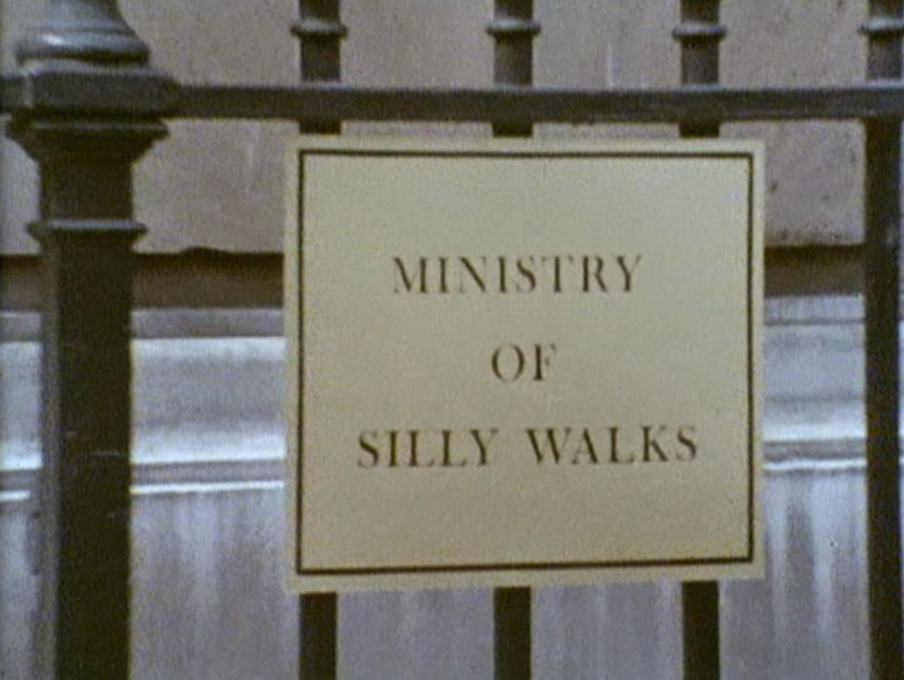
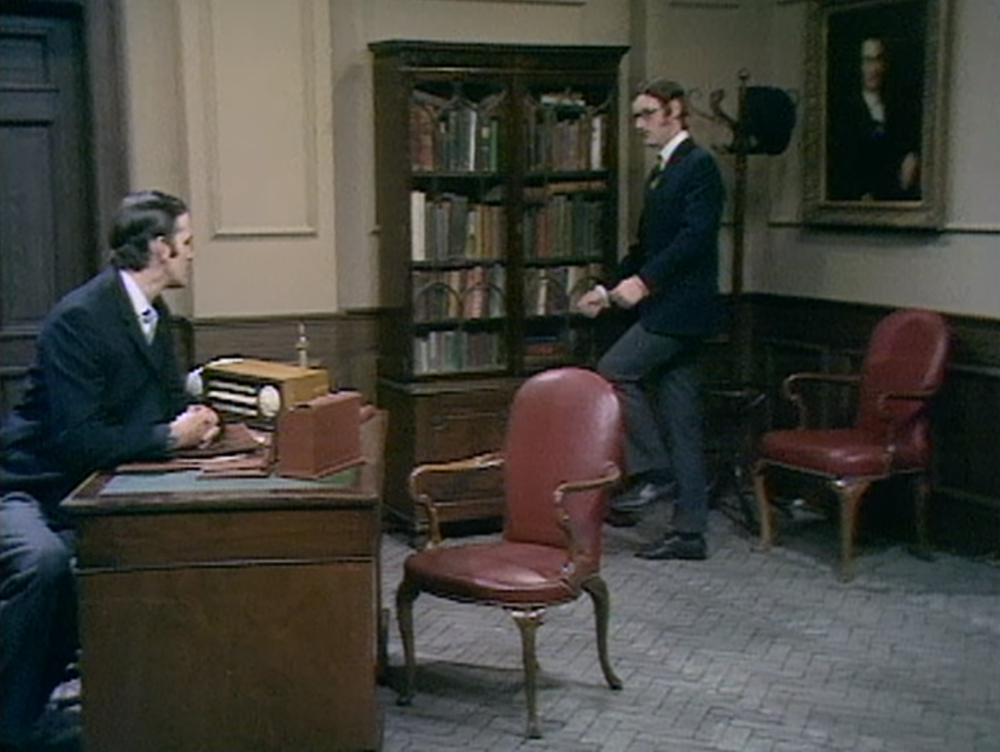
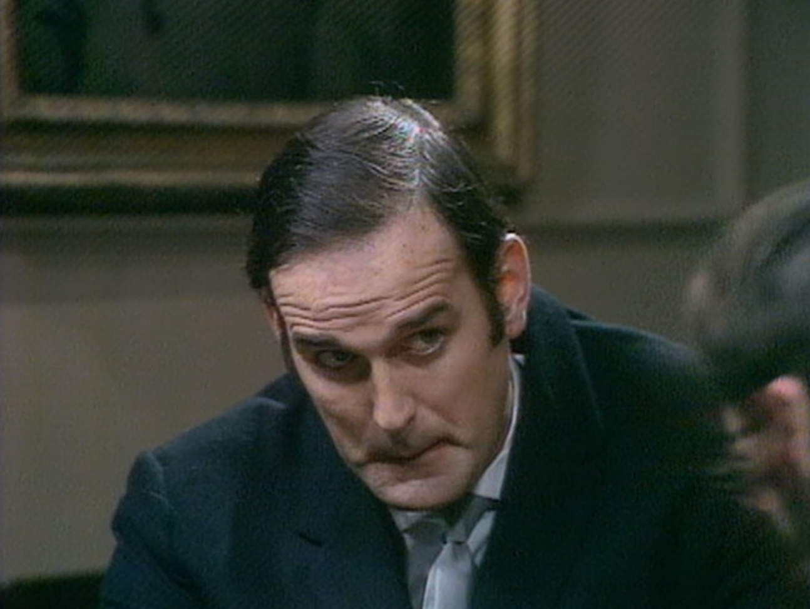
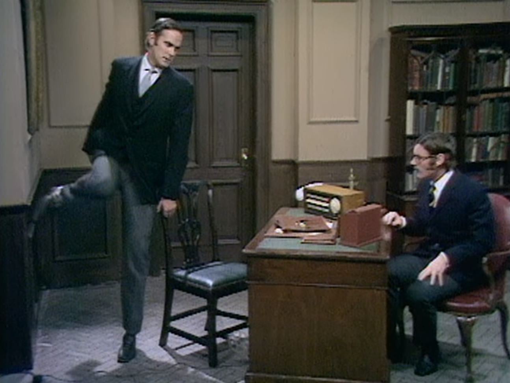
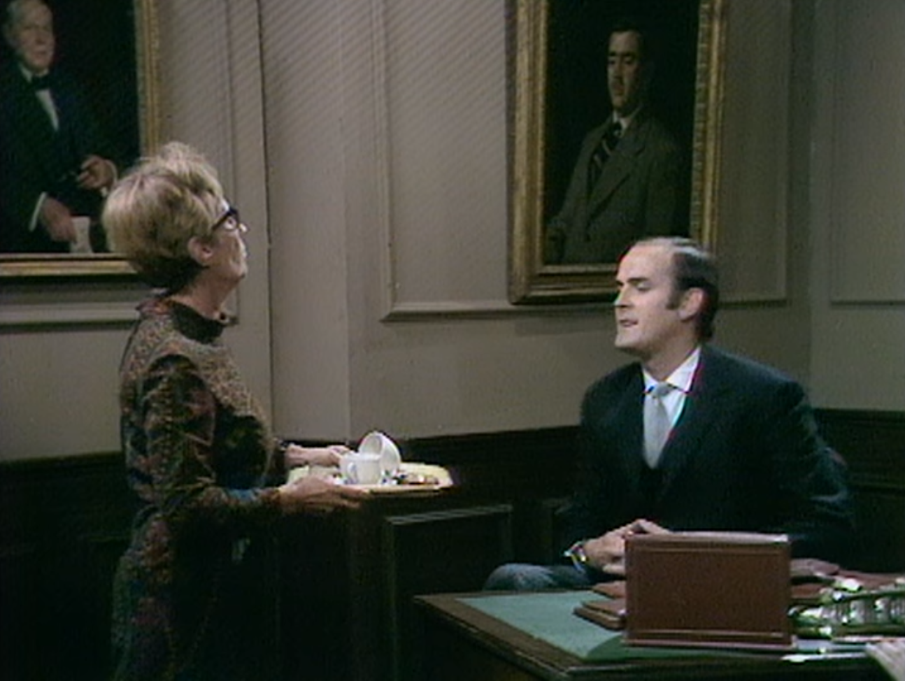
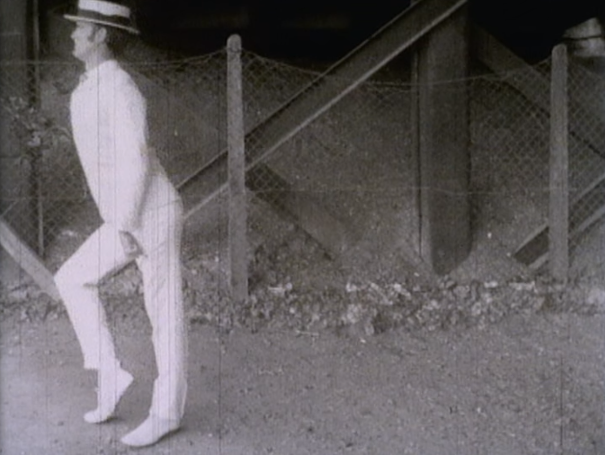
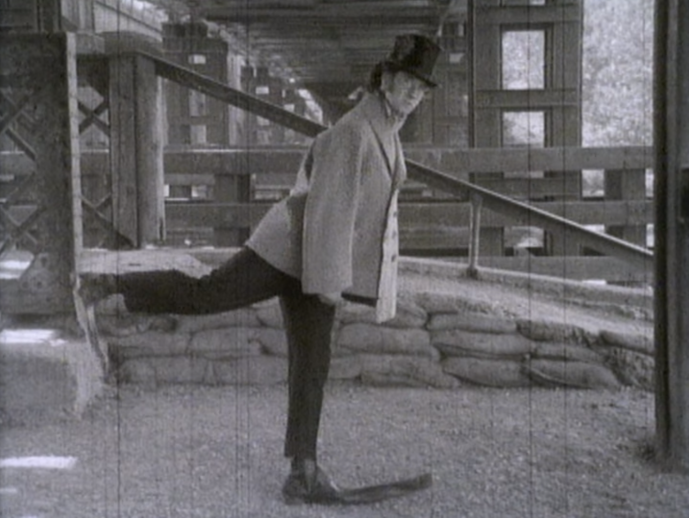
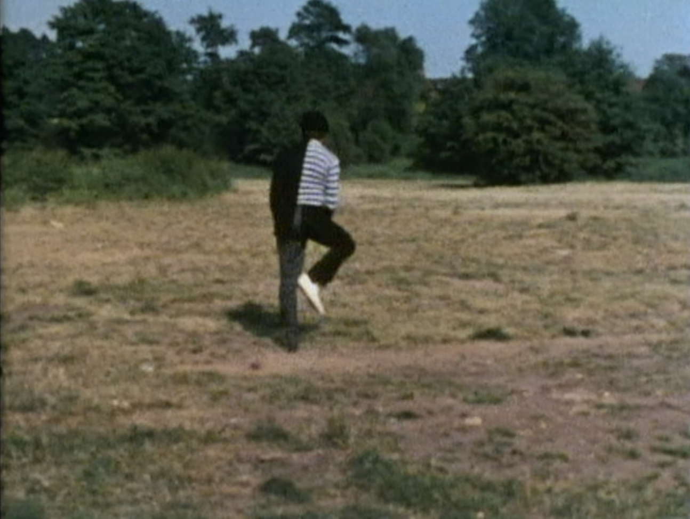

(A man dressed in suit complete with bowler hat comes into shop. He has a silly walk and keeps doing little jumps and then three long paces without moving the top of his body. He buys a paper, then we follow him as he leaves the shop.)
'Times' please.
Oh yes sir, here you are.
Thank you.
Cheers.
(The Minister leaves the shop, from which we see a line of gas men stretching back up the road to Mrs. Pinnet's house (as featured in the New Cooker Sketch), and walks off in an indescribably silly manner. Cut to him proceeding along Whitehall, and into a building labeled 'Ministry of Silly Walks'.)
(Inside the building he passes three other men, each walking in their own eccentric way.)
(Cut to an office; a man is sitting waiting. The minister enters eccentrically.)
Good morning. I'm sorry to have kept you waiting, but I'm afraid my walk has become rather sillier recently, and so it takes me rather longer to get to work. (sits at desk) Now then, what was it again?
Well sir, I have a silly walk and I'd like to obtain a Government grant to help me develop it.
I see. May I see your silly walk?
Yes, certainly, yes.
(He gets up and does a few steps, lifting the bottom part of his left leg sharply at every alternate pace. He stops.)
That's it, is it?
Yes, that's it, yes.
It's not particularly silly, is it? I mean, the right leg isn't silly at all and the left leg merely does a forward aerial half turn every alternate step.
Yes, but I think that with Government backing I could make it very silly.
(rising) Mr. Pudey, (he walks about behind the desk in a very silly fashion) the very real problem is one of money. I'm afraid that the Ministry of Silly Walks is no longer getting the kind of support it needs. You see there's Defense, Social Security, Health, Housing, Education, Silly Walks ... they're all supposed to get the same. But last year, the Government spent less on the Ministry of Silly Walks than it did on National Defense! Now we get £348,000,000 a year, which is supposed to be spent on all our available products. (he sits down) Coffee?
Yes please.
(pressing intercom) Now Mrs. Two-Lumps, would you bring us in two coffees please?
Yes, Mr. Teabag.
... Out of her mind. Now the Japanese have a man who can bend his leg back over his head and back again with every single step. While the Israelis... here's the coffee.
(Enter secretary with tray with two cups on it. She has a particularly jerky silly walk which means that by the time she reaches the minister there is no coffee left in the cups. The minister has a quick look in the cups, and smiles understandingly.)
Thank you - lovely. (she exits still carrying tray and cups) You're really interested in silly walks, aren't you?
Oh rather. Yes.
Well take a look at this, then.
(He products a projector from beneath his desk already spooled up and plugged in. He flicks a switch and it beams onto the opposite wall. The film shows a sequence of six old-fashioned silly walkers. The film is old silent-movie type, scratchy, jerky and 8mm quality. All the participants wear 1900's type costume.
One has huge shoes with soles a foot thick, one is a woman, one has very long 'Little Tich' shoes. Cut back to office. The minister hurls the projector away. Along with papers and everything else on his desk. He leans forward.)
Now Mr. Pudey. I'm not going to mince words with you. I'm going to offer you a Research Fellowship on the Anglo-French
La Marche Futile?
(Cut to two Frenchmen, wearing striped jerseys and berets, standing in a field with a third man who is entirely covered by a sheet.)
Bonjour ... et maintenant ... comme d'habitude, au sujet du Le Marché Commun. Et maintenant, je vous presente, encore une fois, mon ami, le pouf célèbre, Jean-Brian Zatapathique.
(he removes his moustache and sticks it onto the other Frenchman, who continues)
Merci, mon petit chou-chou Brian Trubshawe. Et maintenant avec les pieds à droite, et les pieds au gauche, et maintenant l'Anglais-Française Marche Futile, et voilà
(They unveil the third man and walk off He is facing to camera left and appears to be dressed as a city gent; then he turns about face and we see on his fight half he is dressed au style francais. He moves off into the distance in eccentric sped-up motion.)